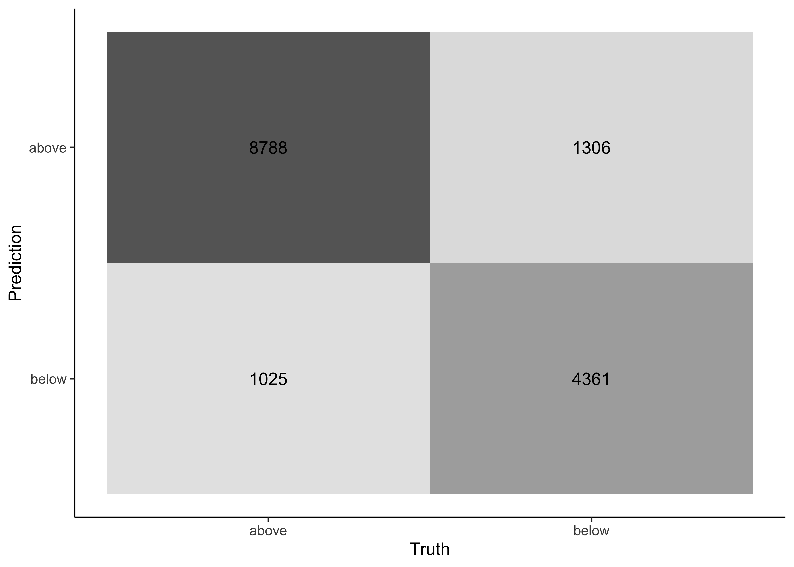
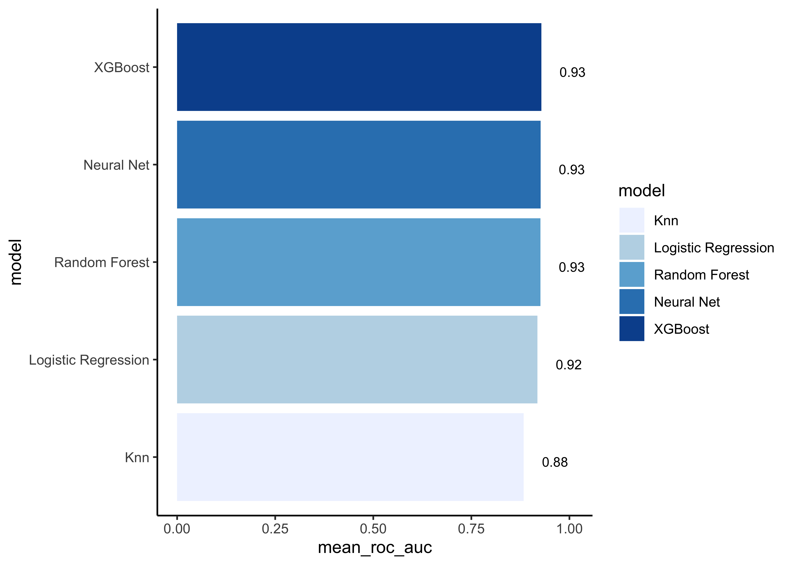

11 Model building
11.1 Specify models
The process of specifying our models is always as follows:
- Pick a
model type - set the
engine - Set the
mode: regression or classification
You can choose the model type and engine from this list.
11.1.1 Logistic regression
log_spec <- # your model specification
logistic_reg() %>% # model type
set_engine(engine = "glm") %>% # model engine
set_mode("classification") # model mode
# Show your model specification
log_spec
#> Logistic Regression Model Specification (classification)
#>
#> Computational engine: glm11.1.4 K-nearest neighbor
knn_spec <-
nearest_neighbor(neighbors = 4) %>% # we can adjust the number of neighbors
set_engine("kknn") %>%
set_mode("classification") 11.1.5 Neural network
To use the neural network model, you will need to install the following packages: keras. You will also need the python keras library installed (see ?keras::install_keras()).
library(keras)
nnet_spec <-
mlp() %>%
set_mode("classification") %>%
set_engine("keras", verbose = 0) We set the engine-specific verbose argument to prevent logging the results.
11.2 Create workflows
To combine the data preparation recipe with the model building, we use the package workflows. A workflow is an object that can bundle together your pre-processing recipe, modeling, and even post-processing requests (like calculating the RMSE).
11.2.1 Logistic regression
Bundle recipe and model with workflows:
log_wflow <- # new workflow object
workflow() %>% # use workflow function
add_recipe(housing_rec) %>% # use the new recipe
add_model(log_spec) # add your model spec
# show object
log_wflow
#> ══ Workflow ════════════════════════════════════════════════════════════════════
#> Preprocessor: Recipe
#> Model: logistic_reg()
#>
#> ── Preprocessor ────────────────────────────────────────────────────────────────
#> 7 Recipe Steps
#>
#> ● step_log()
#> ● step_naomit()
#> ● step_novel()
#> ● step_normalize()
#> ● step_dummy()
#> ● step_zv()
#> ● step_corr()
#>
#> ── Model ───────────────────────────────────────────────────────────────────────
#> Logistic Regression Model Specification (classification)
#>
#> Computational engine: glm11.2.2 Random forest
Bundle recipe and model:
rf_wflow <-
workflow() %>%
add_recipe(housing_rec) %>%
add_model(rf_spec) 11.2.3 XGBoost
Bundle recipe and model:
xgb_wflow <-
workflow() %>%
add_recipe(housing_rec) %>%
add_model(xgb_spec)11.3 Evaluate models
Now we can use our validation set (cv_folds) to estimate the performance of our models using the fit_resamples() function to fit the models on each of the folds and store the results.
Note that fit_resamples() will fit our model to each resample and evaluate on the heldout set from each resample. The function is usually only used for computing performance metrics across some set of resamples to evaluate our models (like accuracy) - the models are not even stored. However, in our example we save the predictions in order to visualize the model fit and residuals with control_resamples(save_pred = TRUE).
Finally, we collect the performance metrics with collect_metrics() and pick the model that does best on the validation set.
11.3.1 Logistic regression
set.seed(100)
log_res <-
log_wflow %>% # use workflow object
fit_resamples(resamples = cv_folds,
control = control_resamples(save_pred = TRUE))
# save predictions11.3.1.1 Accuracy and AUC
Show average performance over all folds:
log_res %>% collect_metrics(summarize = TRUE)
#> # A tibble: 2 x 6
#> .metric .estimator mean n std_err .config
#> <chr> <chr> <dbl> <int> <dbl> <chr>
#> 1 accuracy binary 0.849 5 0.00283 Preprocessor1_Model1
#> 2 roc_auc binary 0.918 5 0.00117 Preprocessor1_Model1Show performance for every single fold:
log_res %>% collect_metrics(summarize = FALSE)
#> # A tibble: 10 x 5
#> id .metric .estimator .estimate .config
#> <chr> <chr> <chr> <dbl> <chr>
#> 1 Fold1 accuracy binary 0.842 Preprocessor1_Model1
#> 2 Fold1 roc_auc binary 0.914 Preprocessor1_Model1
#> 3 Fold2 accuracy binary 0.858 Preprocessor1_Model1
#> 4 Fold2 roc_auc binary 0.921 Preprocessor1_Model1
#> 5 Fold3 accuracy binary 0.844 Preprocessor1_Model1
#> 6 Fold3 roc_auc binary 0.918 Preprocessor1_Model1
#> # … with 4 more rows11.3.1.2 Collect predictions
To obtain the actual model predictions, we use the function collect_predictions and save the result as log_pred:
log_pred <-
log_res %>%
collect_predictions()11.3.1.3 Confusion matrix
Now we can use the predictions to create a confusion matrix:
log_pred %>%
conf_mat(price_category, .pred_class)
#> Truth
#> Prediction above below
#> above 8788 1306
#> below 1025 436111.3.1.4 Recall, precision, F1
Obtain recall, precision and F1-Score:
# recall
log_res %>%
collect_predictions() %>%
recall(price_category, .pred_class)
#> # A tibble: 1 x 3
#> .metric .estimator .estimate
#> <chr> <chr> <dbl>
#> 1 recall binary 0.896
# precision
log_res %>%
collect_predictions() %>%
precision(price_category, .pred_class)
#> # A tibble: 1 x 3
#> .metric .estimator .estimate
#> <chr> <chr> <dbl>
#> 1 precision binary 0.871
# F1 Score
log_res %>%
collect_predictions() %>%
f_meas(price_category, .pred_class)
#> # A tibble: 1 x 3
#> .metric .estimator .estimate
#> <chr> <chr> <dbl>
#> 1 f_meas binary 0.88311.3.2 Random forest
We don’t repeat all of the steps shown in logistic regression and just focus on the performance metrics accuracy and AUC.
rf_res <-
rf_wflow %>%
fit_resamples(
resamples = cv_folds,
control = control_resamples(save_pred = TRUE)
)
rf_res %>% collect_metrics(summarize = TRUE)
#> # A tibble: 2 x 6
#> .metric .estimator mean n std_err .config
#> <chr> <chr> <dbl> <int> <dbl> <chr>
#> 1 accuracy binary 0.857 5 0.00305 Preprocessor1_Model1
#> 2 roc_auc binary 0.926 5 0.00188 Preprocessor1_Model111.3.3 XGBoost
We don’t repeat all of the steps shown in logistic regression and just focus on the performance metrics accuracy and AUC.
xgb_res <-
xgb_wflow %>%
fit_resamples(
resamples = cv_folds,
control = control_resamples(save_pred = TRUE)
)
xgb_res %>% collect_metrics(summarize = TRUE)
#> # A tibble: 2 x 6
#> .metric .estimator mean n std_err .config
#> <chr> <chr> <dbl> <int> <dbl> <chr>
#> 1 accuracy binary 0.859 5 0.00262 Preprocessor1_Model1
#> 2 roc_auc binary 0.928 5 0.00121 Preprocessor1_Model111.3.4 K-nearest neighbor
We don’t repeat all of the steps shown in logistic regression and just focus on the performance metrics accuracy and AUC.
knn_res <-
knn_wflow %>%
fit_resamples(
resamples = cv_folds,
control = control_resamples(save_pred = TRUE)
)
knn_res %>% collect_metrics(summarize = TRUE)
#> # A tibble: 2 x 6
#> .metric .estimator mean n std_err .config
#> <chr> <chr> <dbl> <int> <dbl> <chr>
#> 1 accuracy binary 0.803 5 0.00437 Preprocessor1_Model1
#> 2 roc_auc binary 0.883 5 0.00289 Preprocessor1_Model111.3.5 Neural network
We don’t repeat all of the steps shown in logistic regression and just focus on the performance metrics accuracy and AUC.
nnet_res <-
nnet_wflow %>%
fit_resamples(
resamples = cv_folds,
control = control_resamples(save_pred = TRUE)
)
nnet_res %>% collect_metrics(summarize = TRUE)
#> # A tibble: 2 x 6
#> .metric .estimator mean n std_err .config
#> <chr> <chr> <dbl> <int> <dbl> <chr>
#> 1 accuracy binary 0.856 5 0.00286 Preprocessor1_Model1
#> 2 roc_auc binary 0.926 5 0.00149 Preprocessor1_Model111.3.6 Compare models
Extract the RMSE from our models to compare them:
log_metrics <-
log_res %>%
collect_metrics(summarise = TRUE) %>%
mutate(model = "logistic")
rf_metrics <-
rf_res %>%
collect_metrics(summarise = TRUE) %>%
mutate(model = "random forest")
xgb_metrics <-
xgb_res %>%
collect_metrics(summarise = TRUE) %>%
mutate(model = "XGBoost")
knn_metrics <-
knn_res %>%
collect_metrics(summarise = TRUE) %>%
mutate(model = "Knn")
nnet_metrics <-
nnet_res %>%
collect_metrics(summarise = TRUE) %>%
mutate(model = "Neural net")
# create dataframe with all models
model_compare <- bind_rows(log_metrics,
rf_metrics,
xgb_metrics,
knn_metrics,
nnet_metrics)
# change data structure
model_comp <-
model_compare %>%
select(model, .metric, mean, std_err) %>%
pivot_wider(names_from = .metric, values_from = c(mean, std_err))
# show accuracy
model_comp %>%
arrange(mean_accuracy) %>%
mutate(model = fct_reorder(model, mean_accuracy)) %>%
ggplot(aes(model, mean_accuracy, fill=model)) +
geom_col() +
scale_fill_brewer(palette = "Blues")
# show AUC
model_comp %>%
arrange(mean_roc_auc) %>%
mutate(model = fct_reorder(model, mean_roc_auc)) %>%
ggplot(aes(model, mean_roc_auc, fill=model)) +
geom_col() +
scale_fill_brewer(palette = "Blues")
Note that the model results are all quite similar.
# find maximum accuracy
model_comp %>% slice_max(mean_accuracy)
#> # A tibble: 1 x 5
#> model mean_accuracy mean_roc_auc std_err_accuracy std_err_roc_auc
#> <chr> <dbl> <dbl> <dbl> <dbl>
#> 1 XGBoost 0.859 0.928 0.00262 0.00121Now it’s time to fit the best model one last time to the full training set and evaluate the resulting final model on the test set.
11.4 Last fit and evaluation on test set
Tidymodels provides the function last_fit() which fits a model to the training data and evaluates it on the test set. We just need to provide the workflow object of the best model as well as the data split object (not the training data).
last_fit_xgb <- last_fit(xgb_wflow, split = data_split)
# Show performance metrics
last_fit_xgb %>%
collect_metrics()
#> # A tibble: 2 x 4
#> .metric .estimator .estimate .config
#> <chr> <chr> <dbl> <chr>
#> 1 accuracy binary 0.852 Preprocessor1_Model1
#> 2 roc_auc binary 0.928 Preprocessor1_Model1And this is our final result. Remember that if a model fit to the training dataset also fits the test dataset well, minimal overfitting has taken place. This seems to be also the case in our example.